Next: CBMC Up: Background Previous: Contract programming Contents Index
Satisfiability (SAT) has been hot research topic, since SAT has shown high potential in verifying large systems [31]. SAT solvers work using satisfiability procedures in the core for propositional logic [14]. Propositional logic is predicate in which formula contains Boolean variables, known as atoms, and variables are connected using logical directives like conjunction, disjunction and negation. If 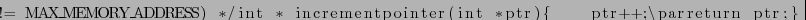 is Boolean variable and,  and 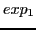 are expressions built from Boolean variables, then we can define following formulas.
and 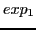 are expressions built from Boolean variables, then we can define following formulas.
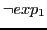 from fig:example:statemachine, is an example for formula constructed from above rules. And the formula can be evaluated to 0 or 1 based the values of all the variables. For example with 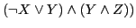, 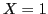 and 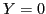 assignment formula is evaluated to 0, and 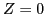 and 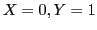 assignment formula is evaluated to 1. This example illustrates, variables can be constrained through operators, for instance for formula to be 1, 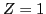 must be 1. Boolean Satisfiability of a formula is a process of finding an assignment which evaluates it to 1. In this example 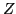 and assignment will make the formula to be evaluated to 1 and satisfy it. The formulas which cannot be satisfied with any possible assignment are called unsatisfiable. For example, 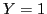 cannot be satisfied with any assignments and hence unsatisfiable.
The SAT problem is NP-Complete [29]. Most SAT solvers use restricted representation of formulas in Conjunctive Normal Formula (CNF). A formula in Conjunctive Normal Form (CNF) is a congestion of clauses. A clause is disjunction of literals. A literal is a Boolean variable, or negation of Boolean variable. For example, 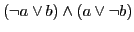, here 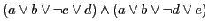 is a clause with set of variables with or without negation. The approach for finding satisfiability differs in different tools. One of the commonly used approachs is DPLL [13]. In DPLL, given a CNF formula, the algorithm heuristically chooses an unassigned variable and assigns it a value, 0 or 1, this step is known as branching step. Then solver tries to simplify the consequences based on deduction rule. In deduction it tries to deduce if any of clause become 0. If one of the assignments leads 0, the algorithm back tracks since it will not lead to any satisfiability. Once it assigns a combination of values to all the variables which can be 1, the formula is said to be satisfiable.
ash 2012-09-13